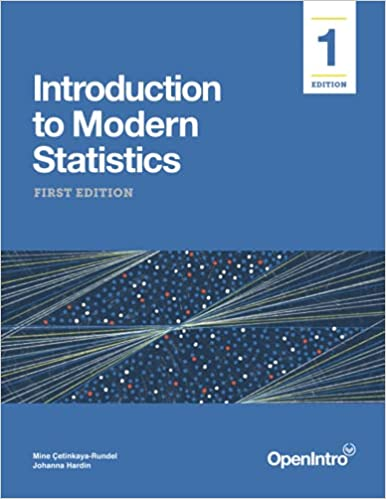

Week Three: Incorporating Categorical Variables
Welcome!
In this week’s coursework we are going to dive deeper into exploring data, by incorporating categorical variables. Specifically, we will explore how we can incorporate categorical variables into our visualizations through the use of colors and facets. We will also explore how we can obtain summary statistics for different groups of a categorical variable, making our summaries more specific.
0.1 Learning Outcomes
By the end of this coursework you should be able to:
- describe what a categorical variable is and how these types of variables are stored in
R - determine whether a variable in a dataset is categorical
- incorporate categorical variables into visualizations of two and three variables
- obtain summary statistics for each level of a categorical variable
1 Prepare
1.1 Reading Guide – Due Tuesday by Midnight
Answers
Please include your answers as a different color! You can pick whatever color you like, but please use a color other than black.
1.2 Textbook Reading – Part 1
Required Reading: Incorporating Categorical Variables into Visualizations
1.3 Textbook Reading – Part 2

Required Reading: Incorporating Categorical Variables into Summary Statistics
1.4 Concept Quiz – Due Tuesday by Midnight
1. Suppose you’ve run the following code to make side-by-side boxplots of life expectancy:
ggplot(data = gapminder_small,
mapping = aes(x = country, y = lifeExp)) +
geom_boxplot() +
labs(x = "",
y = "",
title = "Life Expectancy (in Years) by Country",
fill = "Country"
)Your resulting plot looks like this:

What should you do?
- Move country to the y-axis.
- Remove some countries so the names don’t overlap.
- Nothing, it looks great!
2. If you didn’t want to stack your boxplots side-by-side, how else could you separate the groups?
Tip
This does not go inside the aes() function!
3. What functions are necessary to calculate summary statistics for different groups of a categorical variable?
summarize()mutate()arrange()group_by()filter()
4. A categorical variable could be correctly stored as what data types?
- integer
- double
- character
- factor
5. In Lab 2, you worked with the nycflights dataset, which contained information on flights departing from NYC airports. If we wanted to know the average departure delay for every airline in the dataset (e.g., Delta, Allegiant, United), what steps would we need to use? Match the code to its corresponding step.
First Step
Second Step
Third Step
nycflights
group_by(airline)
filter(dest == "SFO")
summarize(mean_dd = mean(dep_delay))
6. What function did you learn that is used for converting a numerical variable to a categorical variable (a process called discretizing)?
mutate()filter()if_else()group_by()
7. The arrange() function sorts or reorder a data frame’s rows according to the values of the specified variable. By default, what ordering does it use for the rows?
- ascending (smallest to largest)
- descending (largest to smallest)
1.5 R Tutorial – Due Thursday by Midnight
Required Tutorial: Derive Information with dplyr
Submission
Submit a screenshot of the completion page for each tutorial to the Canvas assignment portal!